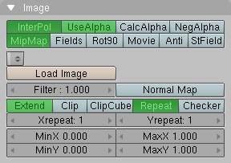

Blender to Ogre Exporter
Blender is an open source 3D content creation suite for modeling,
animation, rendering and video post production. The Blender to Ogre
Exporter is a python script to run directly within Blender. Currently
it supports the export of
- mesh objects with vertex colours, multiple materials, uv textures and blend modes,
- armature keyframe animations.
Installation
The script needs access to standard Python modules not shipped with Blender. Consult the Blender documentation at www.blender.org how to incorporate Python with Blender.
-
Copy the script either into ".blender/scripts" or the user defined scripts directory.
-
In the "Scripts Window" run "Scripts -> Update Menus".
Basic Usage
- In the "3D View" select the objects you want to export.
- In the "Scripts Window" run "Scripts -> Export -> Ogre XML".
- Choose your export options.
- Press the "Export" button.
You will get a detailed log of the export process. Use the
OgreXmlConverter of your Ogre installation to convert the generated XML
files to binary .mesh and .skeleton files.
Screenshot of the exporter interface.
Options
- Material File
- The name of the material script file that will be generated.
- Game Engine Materials
- Export materials as diplayed in the game engine. Materials are exported
as displayed in the rendered results on default.
- Export Armature
- Export armatures and armature animations.
- World Coordinates
- Export objects in world coordinates instead of object coordinates.
- Coloured Ambient
- Use scaled diffuse colour as ambient colour instead of scaled white.
This does only work for materials for which TexFace is not set.
- Mesh Scale Factor
- All meshs and bones are scaled on export by this factor.
- RotX
- Angle of an additional rotation around the x-axis of all objects
on export. This rotation is applied first. Set it to -90 degrees to map
Blender's up-vector (z-direction) to Ogre's default up-vector
(y-direction).
- RotY
- Angle of an additional rotation around the y-axis. This rotation is applied second, after RotX.
- RotZ
- Angle of an additional rotation around the z-axis. This rotation is applied third, after RotY.
- Animation settings of
- Choose an object from the list of all objects selected for
export. The animations that will be exported for that object are then
displayed in the scroll area below. Each animation correspond to one
line.
- Action name
- The name of the Blender action.
- Start frame (Sta:)
- Start frame of the animation.
- End frame (End:)
- End frame of the animation.
- Animation export name
- The animation name in the exported Ogre file.
- Delete
- Removes the animation from export.
- Add
- Add another animation to be exported.
- Update
- Updates the list of all objects selected for export from the
currently selected objects in the "3D View". Also updates the list of
possible actions, deletes animations for removed actions and sets
default animations for new actions.
- Use Pose Sampler
- The exporter has two modes of operation when converting Blender
armature action animations to Ogre skeleton animations. When Use Pose Sampler
button is not pushed in (not enabled) the animations will be sampled
using ipo curves (pre-blender 2.40). Sampling ipo curves does not
take into acount bones setup using IK (Inverse Kinemetics) or
constraints so the exported animation will not be a true representation
of the animation as rendered in Blender with IK and constraints.
With Blender 2.41 and above, the exporter can use Blender Pose
Sampling so that the exported animation to Ogre will be identical to
the Blender animation even if IK and contraints are used on the bones
of the armature.
- Mesh Path
- Mesh and Skeleton files of the exporter are written into this
directory. Mesh files are named after the mesh object name in Blender
with suffix ".mesh.xml". Skeleton files are named after the armature
object name in Blender with suffix ".skeleton.xml".
- Material Path
- The material file generated by the exporter is written into this directory.
- Export
- Export all objects in the list of objects selected for export.
- Quit
- Exit from the export script.
The script loads and saves its options to a text buffer
"ogreexport.cfg" inside the current .blend file. You can disable this
behaviour by changing the script variable KEEP_SETTINGS to 0.
If the OGRE_XML_CONVERTER script variable is set to the
OgreXMLConverter executable, the converter is called on the exported
XML files.
Specifics
Mesh
The script supports sticky and per face vertex uv coordinates,
smoothed and non-smoothed normals, vertex colours. Each rectangle face
is automatically converted into two triangle faces in the exported mesh.
The script does not support subdivision surface (SubSurf) options.
To export a SubSurf object, you have to convert it into a Mesh object,
"Object -> Convert Object Type... -> Mesh (keep original)".
The script does not support the "Double Sided" mesh option, use the "Two Sided" face option instead.
Material
In contrast to Ogre, Blender treats material, uv texture and blend
mode separately. Also Blender distinguishs between material appearance
in the game engine and material appearance in the rendered results.
Game Engine Materials
The material name has to be unique. Therefore, the name of the exported
material consists of Blender's material name (if any), the face blend
mode and texture file name (if any). If vertex colours are defined, a
postfix "/VertCol" is appended. Also, if the two-sided face option is
set, "/TWOSIDE" is appended.
If a material is assigned to face, only the properties that affect
the appearance in the game engine are exported. These are the "Col" and
"Spe" colours, the "Amb", "Spec" and "Hard" factors and the "VCol
Paint" and "TexFace" options.
Textures assigned with the UV/Image Editor are exported. Note that
material image textures, which can be exported as rendering engine
materials, give you more control over filtering and texture address
modes.
Blender's face settings affect the mesh appearance only in the game
engine. The properties exported by the script are marked green.
Rendering Engine Materials
The name of the exported material is the same as in Blender. If the
"Two Sided" face option is set, the suffix "/TWOSIDE" is appended. If
the "TexFace" material option is set, the suffix "/TEXFACE" and the
name of the texture image that is assigned with the UV/Image Editor is
appended. The "Two Sided" face option has no effect in Blender's
rendering results and is evaluated on export for convenience only.
Blender's material settings that affect the exported Ogre material are marked green.

The script exports image textures with "Map Input" set to "UV" and
"Map To" set to "Col" and optional "Alpha". The supported image options
are marked green.
| InterPol |
MipMap |
resulting filtering |
| yes |
yes |
trilinear |
| yes |
no |
linear linear none |
| no |
yes |
bilinear |
| no |
no |
none |
Armature
You must have no more than four weighted bone assignments per mesh
vertex. If you have more, the script will eliminate the lowest weighted
assignments and renormalise the other weights. All vertices must be
assigned to at least one bone.
Armature animations are exported based upon keyframe ranges and
action names. You can choose any frame as start and end frame of an
animation. The script will automatically insert keyframes at the start
and end of the exported animation and reverse the exported animation if
the end frame is lesser than the start frame. In order to export
armature animations of a mesh you don't have to select the armature
separately.
The script will evaluate action constraints if the Use Pose Sampler button is pressed.
Ogre does not inherit parent bone scaling by default.
The animation speed in the export in terms of frames per second is taken from the corresponding scene render button.
Blender's format setting that affect the exported Ogre animation is marked green.